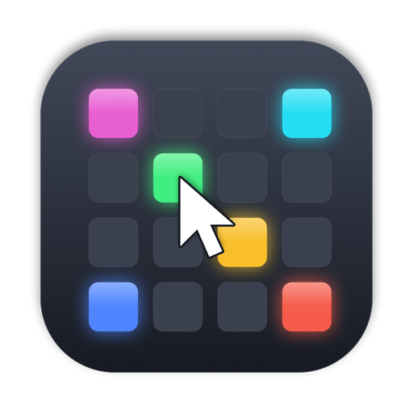

onom apps
ONOM FLOW
8つのレイヤーへ素材を次々と流し込む、Mac専用のVJアプリ。
A VJ app for Mac: send clips to eight layers, one after another.
Mirage Composer
パッチをつないで作る、リアルタイムの映像。
Real-time visuals you build by connecting patches.
MIDITouchPad
トラックパッドに触れた位置を MIDI CC で送る、メニューバーのアプリ。
Send where you touch your trackpad as MIDI CC, from the menu bar.

MIDISimulator
Launchpad と Launch Control XL MK2 を画面上で再現。実機が無くても MIDI Learn を進められる。
On-screen Launchpad and Launch Control XL MK2, for MIDI Learn without the hardware.